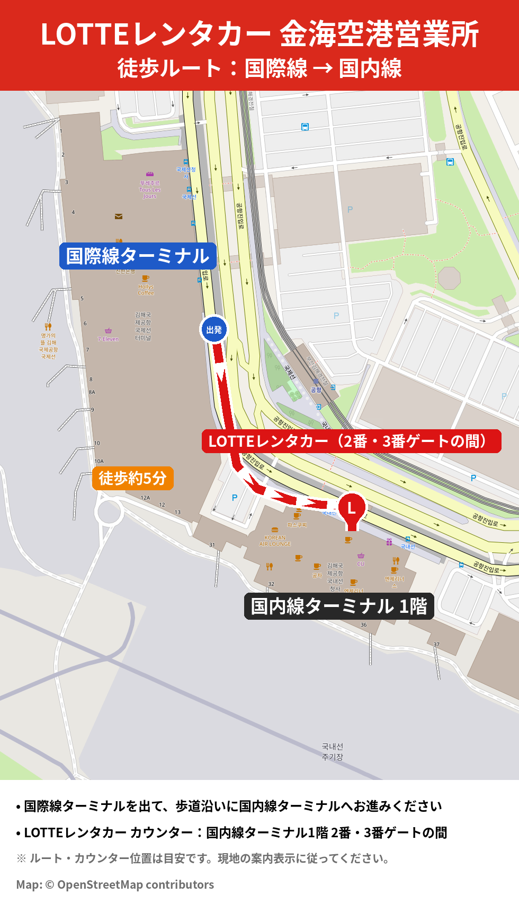

金海空港 ピックアップ案内
金海空港営業所 · ご利用前のご案内

1受取場所
国内線ターミナル1階（到着ロビー）
カウンターは2番ゲートと3番ゲートの間にございます。
国際線ターミナルから徒歩約5分です。
2お持ちいただくもの（原本のみ）
- パスポート – 本人確認用
- 有効な国際運転免許証（IDP） – 有効期限と車種区分をご確認ください：
- B区分：運転席を除き8人乗り以下の車両
- D区分：運転席を除き8人乗りを超える車両
3ご到着前に
メールへのご返信で到着便名（例：KE1234）をお知らせください。
⚡ スピード貸渡サービス
パスポートと国際運転免許証のスキャンデータを事前にお送りいただくと、当日の手続きがスムーズになります。
お問い合わせ：金海空港営業所
✉️ 534046@lotte.net
💬 チャットで相談受付時間 8:00〜21:00（韓国時間）